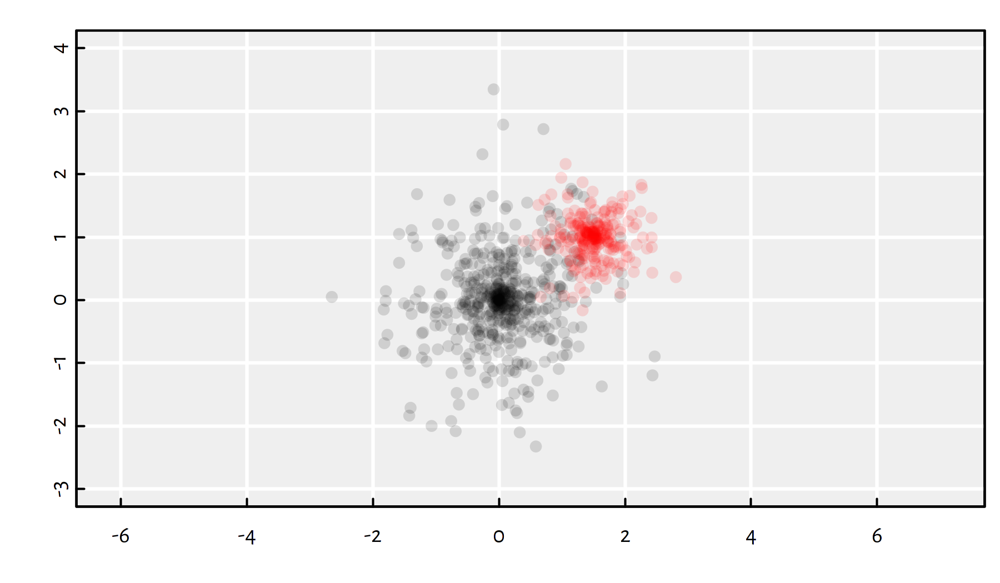

8.1 Introduction
8.1.1 Recap
Recall that an optimisation task deals with finding an element \({x}\) in a search space \(D\), that minimises or maximises an objective function \(f:D\to\mathbb{R}\): \[ \min_{{x}\in D} f({x}) \quad\text{or}\quad\max_{{x}\in D} f({x}), \]
In one of the previous chapters, we were dealing with unconstrained continuous optimisation, i.e., we assumed the search space is \(D=\mathbb{R}^p\) for some \(p\).
Example problems of this kind: minimising mean squared error in linear regression or cross-entropy in logistic regression.
The class of general-purpose iterative algorithms we’ve previously studied fit into the following scheme:
\(\mathbf{x}^{(0)}\) – initial guess (e.g., generated at random)
- for \(i=1,...,M\):
- \(\mathbf{x}^{(i)} = \mathbf{x}^{(i-1)}+\text{[guessed direction, e.g.,}-\eta\nabla f(\mathbf{x})\text{]}\)
- if \(|f(\mathbf{x}^{(i)})-f(\mathbf{x}^{(i-1)})| < \varepsilon\) break
return \(\mathbf{x}^{(i)}\) as result
where:
- \(M\) = maximum number of iterations
- \(\varepsilon\) = tolerance, e.g, \(10^{-8}\)
- \(\eta>0\) = learning rate
The algorithms such as gradient descent and BFGS (see optim())
give satisfactory results in the case of smooth and well-behaving objective functions.
However, if an objective has, e.g., many plateaus (regions where it is almost constant), those methods might easily get stuck in local minima.
The K-means clustering’s objective function is a not particularly pleasant one – it involves a nested search for the closest cluster, with the use of the \(\min\) operator.
8.1.2 K-means Revisited
In K-means clustering we are minimising the squared Euclidean distance to each point’s cluster centre: \[ \min_{\boldsymbol\mu_{1,\cdot}, \dots, \boldsymbol\mu_{K,\cdot} \in \mathbb{R}^p} \sum_{i=1}^n \left( \min_{k=1,\dots,K} \sum_{j=1}^p \left(x_{i,j}-\mu_{k,j}\right)^2 \right). \]
This is an (NP-)hard problem! There is no efficient exact algorithm.
We need approximations. In the last chapter, we have
discussed the iterative Lloyd’s algorithm (1957),
which is amongst a few procedures implemented in the kmeans() function.
To recall, Lloyd’s algorithm (1957) is sometimes referred to as “the” K-means algorithm:
Start with random cluster centres \(\boldsymbol\mu_{1,\cdot}, \dots, \boldsymbol\mu_{K,\cdot}\).
For each point \(\mathbf{x}_{i,\cdot}\), determine its closest centre \(C(i)\in\{1,\dots,K\}\).
For each cluster \(k\in\{1,\dots,K\}\), compute the new cluster centre \(\boldsymbol\mu_{k,\cdot}\) as the componentwise arithmetic mean of the coordinates of all the point indexes \(i\) such that \(C(i)=k\).
If the cluster centres changed since last iteration, go to step 2, otherwise stop and return the result.
As the procedure might get stuck in a local minimum, a few restarts are recommended (as usual).
Hence, we are used to calling:
8.1.3 optim() vs. kmeans()
Let us compare how a general-purpose optimiser such as the BFGS algorithm
implemented in optim() compares with a customised, problem-specific solver.
We will need some benchmark data.
gen_cluster <- function(n, p, m, s) {
vectors <- matrix(rnorm(n*p), nrow=n, ncol=p)
unit_vectors <- vectors/sqrt(rowSums(vectors^2))
unit_vectors*rnorm(n, 0, s)+rep(m, each=n)
}The above function generates \(n\) points in \(\mathbb{R}^p\) from a distribution centred at \(\mathbf{m}\in\mathbb{R}^p\), spread randomly in every possible direction with scale factor \(s\).
Two example clusters in \(\mathbb{R}^2\):
# plot the "black" cluster
plot(gen_cluster(500, 2, c(0, 0), 1), col="#00000022", pch=16,
xlim=c(-3, 4), ylim=c(-3, 4), asp=1, ann=FALSE, las=1)
# plot the "red" cluster
points(gen_cluster(250, 2, c(1.5, 1), 0.5), col="#ff000022", pch=16)
Let’s generate the benchmark dataset \(\mathbf{X}\) that consists of three clusters in a high-dimensional space.
set.seed(123)
p <- 32
Ns <- c(50, 100, 20)
Ms <- c(0, 1, 2)
s <- 1.5*p
K <- length(Ns)
X <- lapply(1:K, function(k)
gen_cluster(Ns[k], p, rep(Ms[k], p), s))
X <- do.call(rbind, X) # rbind(X[[1]], X[[2]], X[[3]])The objective function for the K-means clustering problem:
library("FNN")
get_fitness <- function(mu, X) {
# For each point in X,
# get the index of the closest point in mu:
memb <- FNN::get.knnx(mu, X, 1)$nn.index
# compute the sum of squared distances
# between each point and its closes cluster centre:
sum((X-mu[memb,])^2)
}Setting up the solvers:
min_HartiganWong <- function(mu0, X)
get_fitness(
# algorithm="Hartigan-Wong"
kmeans(X, mu0, iter.max=100)$centers,
X)
min_Lloyd <- function(mu0, X)
get_fitness(
kmeans(X, mu0, iter.max=100, algorithm="Lloyd")$centers,
X)
min_optim <- function(mu0, X)
optim(mu0,
function(mu, X) {
get_fitness(matrix(mu, nrow=nrow(mu0)), X)
}, X=X, method="BFGS", control=list(reltol=1e-16)
)$valRunning the simulation:
nstart <- 100
set.seed(123)
res <- replicate(nstart, {
mu0 <- X[sample(nrow(X), K),]
c(
HartiganWong=min_HartiganWong(mu0, X),
Lloyd=min_Lloyd(mu0, X),
optim=min_optim(mu0, X)
)
})Notice a considerable variability of the objective function at the local minima found:
par(mar=c(2, 6.5, 0.5, 0.5)) # figure margins
boxplot(as.data.frame(t(res)), horizontal=TRUE, las=1)## HartiganWong Lloyd optim
## Min. 421889.463 425119.482 422989.2
## 1st Qu. 424662.768 433669.308 432445.6
## Median 427128.673 438502.186 440032.9
## Mean 426557.050 438074.991 440635.3
## 3rd Qu. 428242.881 441381.268 446614.2
## Max. 431868.537 450469.678 466302.5
## sd 2300.955 5709.282 10888.4Of course, we are interested in the smallest value of the objective, because we’re trying to pinpoint the global minimum.
## HartiganWong Lloyd optim
## 421889.5 425119.5 422989.2The Hartigan-Wong algorithm (the default one in kmeans())
is the most reliable one of the three:
- it gives the best solution (low bias)
- the solutions have the lowest degree of variability (low variance)
- it is the fastest:
library("microbenchmark")
set.seed(123)
mu0 <- X[sample(nrow(X), K),]
summary(microbenchmark(
HartiganWong=min_HartiganWong(mu0, X),
Lloyd=min_Lloyd(mu0, X),
optim=min_optim(mu0, X),
times=10
), unit="relative")## expr min lq mean median
## 1 HartiganWong 1.10129 1.12666 1.204456 1.260605
## 2 Lloyd 1.00000 1.00000 1.000000 1.000000
## 3 optim 1608.58910 1601.12095 1495.478568 1567.427931
## uq max neval
## 1 1.356686 1.088029 10
## 2 1.000000 1.000000 10
## 3 1529.904081 1110.287899 10## [1] 421889.5Is it the global minimum?
We don’t know, we just didn’t happen to find anything better (yet).
Did we put enough effort to find it?
Well, maybe. We can try more random restarts:
res_tried_very_hard <- kmeans(X, K, nstart=100000, iter.max=10000)$centers
print(get_fitness(res_tried_very_hard, X))## [1] 421889.5Is it good enough?
It depends what we’d like to do with this. Does it make your boss happy? Does it generate revenue? Does it help solve any other problem? Is it useful anyhow? Are you really looking for the global minimum?